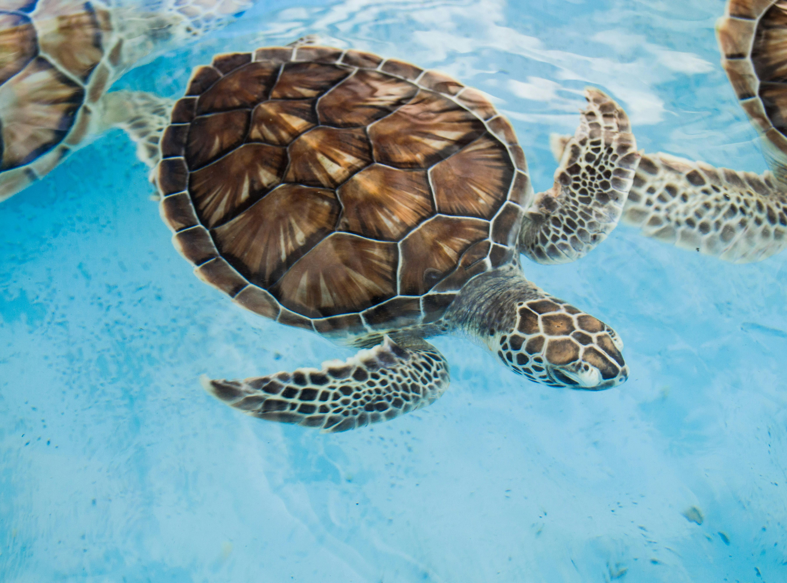

Life of a Sea Turtle

Sea turtles are marine reptiles that have lived in Earth’s oceans for millions of years. They spend most of their lives underwater, but they must swim up to the surface to breathe air. Many sea turtles travel long distances to find food and to return to nesting beaches.
Sea turtles play an important role in ocean ecosystems. For example, some species help maintain healthy seagrass beds, and others help balance marine food chains. Because they move through different areas of the ocean, they contribute to the health of many habitats.
Today, sea turtles face many threats such as plastic pollution, fishing nets, habitat loss, and climate change. Learning about sea turtles helps people understand why protecting oceans is important.